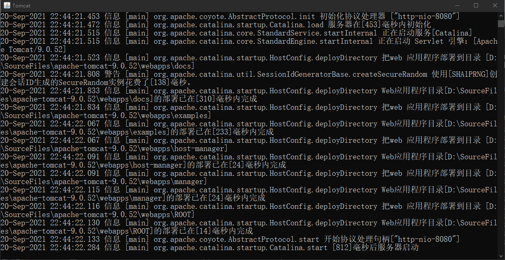

- 作为web开发人员，开发完的网页肯定是想通过ip或域名在浏览器上访问
- 用户使用浏览器访问网页就是发送http请求，web服务器响应请求的过程，所以解析http的工作就交给web服务器了
- web服务器有很多，Tomcat是一款小巧灵活并使用最为广泛的轻量级Web应用服务器，提供了对Jsp和Servlet的支持
版本支持
| Tomcat 版本 | 最新子版本 |
Servlet 规范 |
JSP 规范 |
EL 规范 |
WebSocket 规范 |
认证（JASIC） 规范 |
Java 版本 |
|---|---|---|---|---|---|---|---|
| 10.0.x | 10.0.0 | 5.0 | 3.0 | 4.0 | 2.0 | 2.0 | 8 以及更高 |
| 9.0.x | 9.0.36 | 4.0 | 2.3 | 3.0 | 1.1 | 1.1 | 8 以及更高 |
| 8.5.x | 8.5.56 | 3.1 | 2.3 | 3.0 | 1.1 | 1.1 | 7 以及更高 |
| 8.0.x（已被取代） | 8.0.53（已被取代） | 3.1 | 2.3 | 3.0 | 1.1 | N/A | 7 以及更高 |
| 7.0.x | 7.0.104 | 3.0 | 2.2 | 2.2 | 1.1 | N/A |
6 以及更高 （对于 WebSocket，支持 7 以及更高） |
| 6.0.x（已废弃） | 6.0.53（已废弃） | 2.5 | 2.1 | 2.1 | N/A | N/A | 5 以及更高 |
| 5.5.x（已废弃） | 5.5.36（已废弃） | 2.4 | 2.0 | N/A | N/A | N/A | 1.4 以及更高 |
| 4.1.x（已废弃） | 4.1.40（已废弃） | 2.3 | 1.2 | N/A | N/A | N/A | 1.3 以及更高 |
| 3.3.x（已废弃） | 3.3.2（已废弃） | 2.2 | 1.1 | N/A | N/A | N/A | 1.1 以及更高 |
目录与文件
以下是 Tomcat 的一些关键目录：
- /bin 命令中心：存放用于启动及关闭的文件，以及其他一些脚本。其中，UNIX 系统专用的
*.sh文件在功能上等同欲Windows 系统专用的*.bat文件。因为 Win32 的命令行缺乏某些功能，所以又额外地加入了一些文件。 - /conf 配置中心：配置文件及相关的 DTD。其中最重要的文件是 server.xml，这是容器的主配置文件。
- /lib Tomcat 的库文件。Tomcat 运行时需要的 jar 包所在的目录。
- /temp 存储临时产生的文件，即缓存。
- /log 日志文件的默认目录。
- /webapps 存放 Web 应用的相关文件。web 应用放置到此目录下浏览器可以直接访问。
- /work 编译以后的 class 文件。
安装方法
首先需要安装JRE，不过多演示如何安装运行环境
使用魔法去该网站下载Tomcat服务器压缩文件：Apache Tomcat® - Welcome!
下载完成后，进行解压
本人尝试在Windows下部署，之后JavaEE完成之后，将再演示部署到Linux服务器上。
启动Tomcat
安装配置好了 Tomcat 和 JDK，就可以将 Tomcat 跑起来了。进入 Tomcat 安装目录下的 bin 文件夹，找到 startup.bat 脚本文件，双击即可运行 Tomcat。
若在Linux下，可以使用./startup.sh启动服务器

解决显示乱码问题
在安装路径的conf文件夹下找到logging.properties的文件，将其中的java.util.logging.ConsoleHandler.encoding = UTF-8后的UTF-8修改为GBK编码(原因是憨批Windows的默认编码是GBK编码，若改Windows为UTF-8，相信我会有更多的bug……)
访问网站
访问http://localhost:8080/ 即可看到如下所示页面，说明服务启动成功

如何停止Tomcat服务器
1.在windows下直接点击powershell右上角的【x】进行关闭
2.使用快捷键Ctrl+C关闭服务器
3.找到Tomcat安装路径下bin目录中的shutdown.bat关闭服务器，Linux使用shutdown.sh
在IDEA中管理配置Tomcat服务器
1.在IDEA中建立JavaEE应用时选择服务器
未创建过服务器时可以新建服务器
文件结构如下所示，使用Maven进行JAR包管理：
配置Tomcat启动选项
启动服务器：